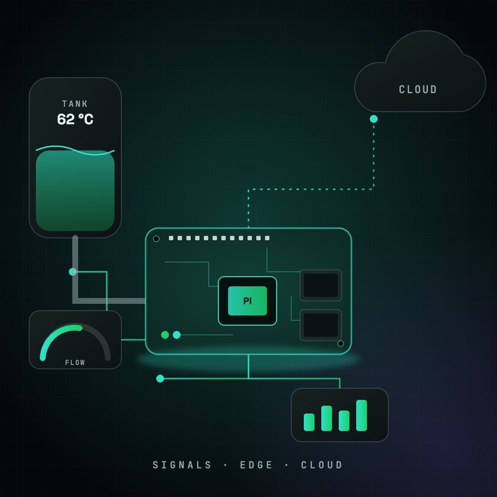
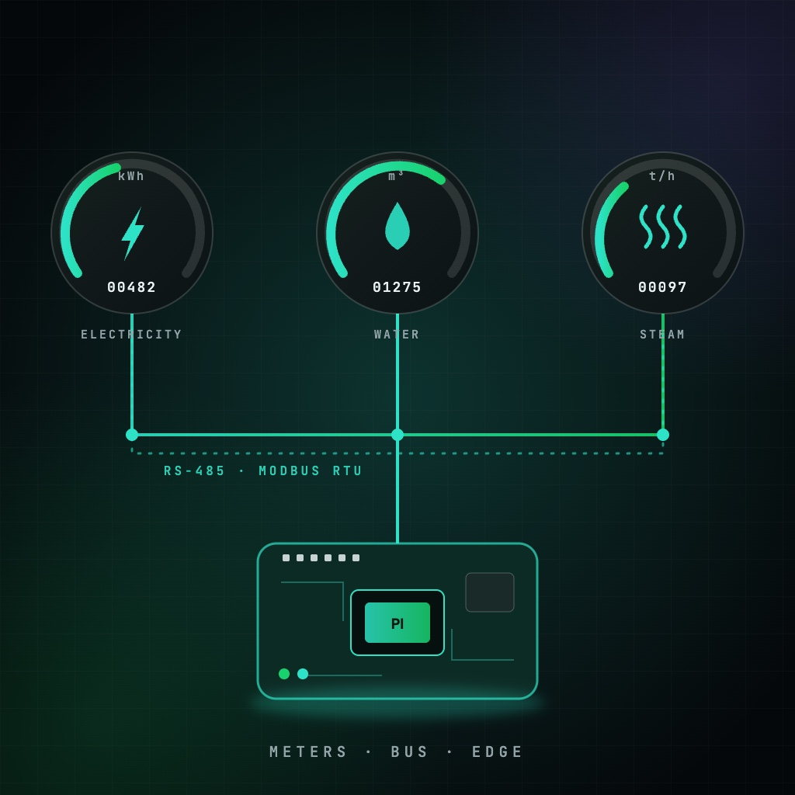

BI in a Box
INDUST Systems Ltd., Greece
End-to-end Business Intelligence platform that turns raw data from ERP systems and databases into insights via dashboards, reporting and time-series forecasting.
Portfolio
12 projects across AI, Telecom, Web, IoT and Simulation. Filter by category, or search by technology, client or keyword.
12 projects
INDUST Systems Ltd., Greece
End-to-end Business Intelligence platform that turns raw data from ERP systems and databases into insights via dashboards, reporting and time-series forecasting.
University of Patras, Greece
Model evaluation on a 75%-25% training-test split using f1 score, precision and recall, parameter tuning, SVM training and the use of neural networks.
University of Patras, Greece
2D kNN query implementation using K-D Trees, Quad Trees and 2D Range Trees over a dataset of check-in events with x/y coordinates, accuracy, timestamps and place ids.

OTE, Greece
New Order Management and Integration functionalities enabling BSS–OSS communication, built on Oracle SOA Suite 12c, Oracle OSM, WebLogic Integration (WLI) and Java EE.
OTE, Greece
Order to Bill and Fault to Repair solution for OTE's Premium Internet Access, a symmetric internet product, built on Oracle Siebel CRM, OSM and UIM.

Cosmote, Greece
Digital ordering, SIM activation and onboarding of Cosmote prepaid products across app and site touchpoints, plus the Manage SIM user journey in Siebel Open UI.

INDUST Systems, Greece
INDUST Systems' monitoring and notification platform for industrial environments: live SCADA-style dashboards, charts, scenarios and alerts built on device data.

INDUST Systems, Greece
IoT platform for data collection, processing, visualization and device management, using MQTT, CoAP and HTTP, with scalability, fault-tolerance and performance.

University of Patras, Greece
Interactive heatmap visualization of real-time data, showing metrics such as population density, temperature variations or traffic patterns over a geographic area.

University of Patras, Greece
Simulation of a production line that tracks machine stops across RUN, STANDBY and STOP states to identify problems and optimize production performance indicators.

Athenian Brewery, Greece
RaspberryPi-based industrial IoT controllers for digitizing production lines: reading process signals, pre-processing data, sending it to the cloud, executing commands.

Athenian Brewery (Heineken), Patras, Greece
RaspberryPi-based IoT application that reads electricity, water and steam energy meters over RS-485 (Modbus RTU), piloted at the Athenian Brewery factory in Patras.
No projects match
Try another keyword or pick a different category.